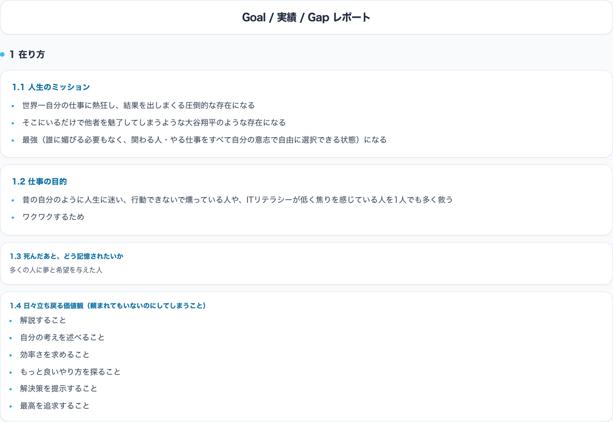
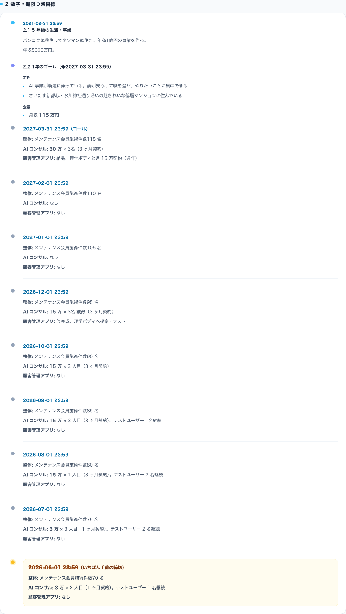
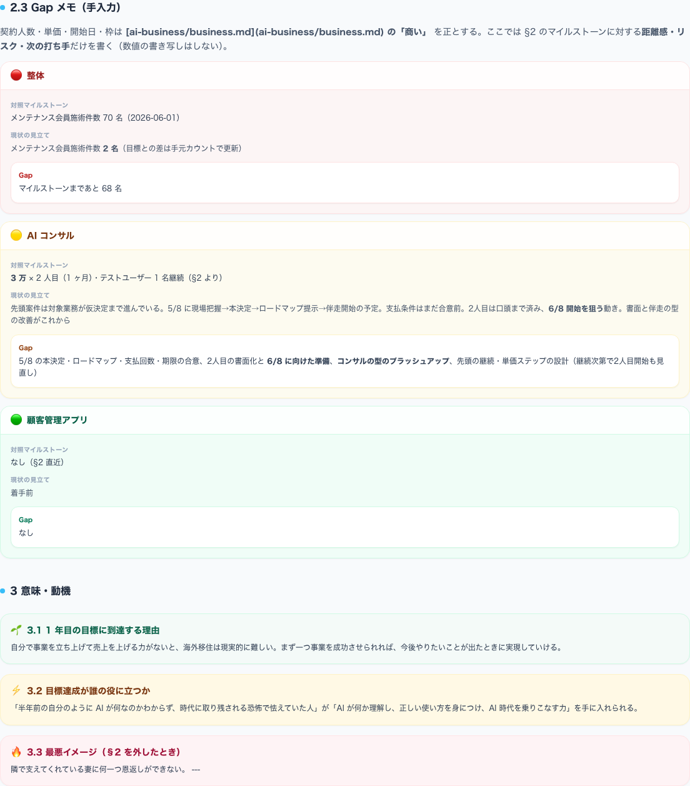
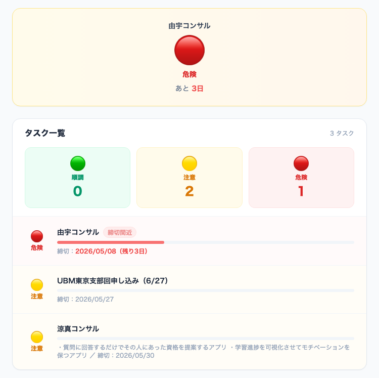
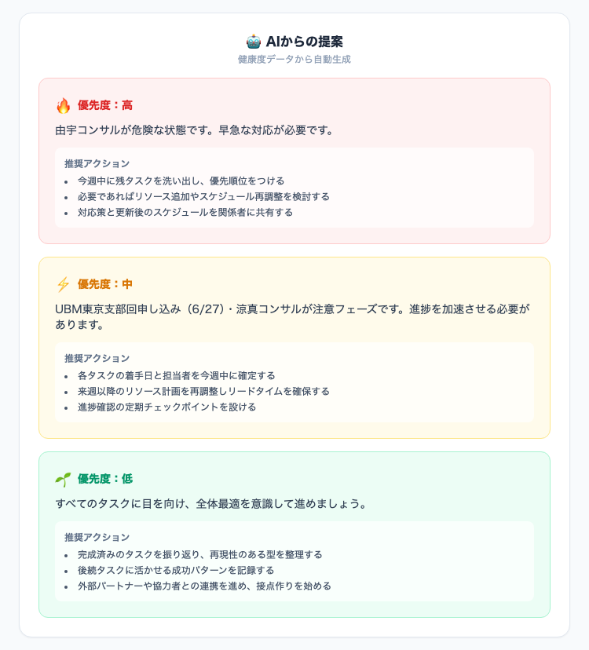
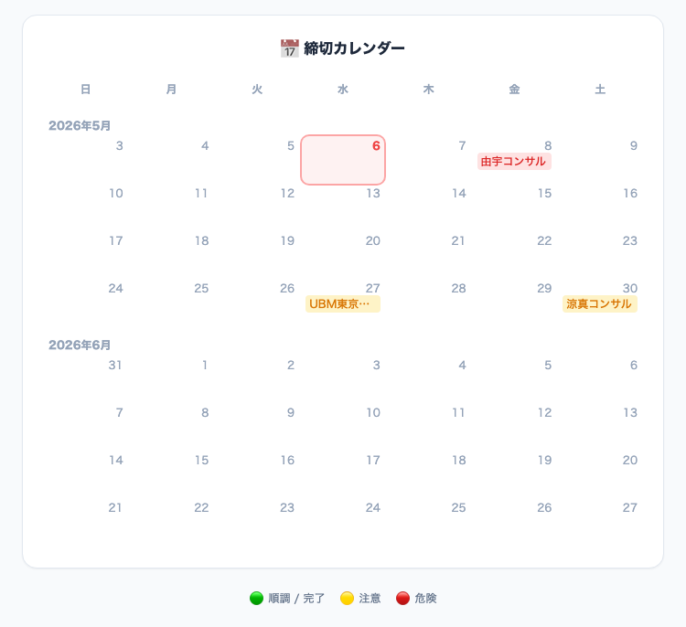

仕事の運用
仕事コンテキスト反映の
報告自動化
毎朝4時に、自動で「Goal → 実績 → Gap → タスク進捗」の順にレポートを生成して、Slackに通知する。
ひとことで言うと ── 「目的から始まる」 報告フロー
いまのタスクが「そもそも必要か？」まで、強制的に立ち返れる設計
Goal
「どこへ向かうか」を先に確認
実績
できたこと・積み上げを見える化
Gap
「あと何が足りない？」を整理
最後にタスク一覧（順調 / 注意 / 危険）で「今日の打ち手」を確定
次に、「どう動いているか（4つのパーツ）」と「実際の画面」を並べて見せます。
工夫①：4つのパーツに分解して、詰まらない設計にした
トリガー（時間）
毎朝4時に GitHub Actions が起動。
「いつ動くか」を固定して、習慣化しやすくする。
04:00 / daily
ソース元（2系統）
- Notion：タスク表（今日やることの材料）
- Git管理：仕事のコンテキスト（Goal / 実績 / Gap）
処理する場所（GitHub）
データ取得 → レポート生成 → 出力（HTML/画像化など）を一箇所で実行。
「処理がどこで起きるか」を迷わなくする。
通知先（Slack）
できあがったレポートを Slack に送る。
すぐ見られる場所に置いて、行動につなげる。
全体の流れ
トリガー
ソース
処理
Slack
工夫②：仕事のコンテキスト直下に組み込んで、「目的に接続された報告」にした
狙い
- Goal・実績・Gapをまとめたレポートを先頭に置く
- そのあとで「タスクの進行状況」を確認できるようにする
- タスクはGoal達成のための手段なので、毎回 Goal に立ち返れるようにする
効果
問いが立つ
最初にGoalを見せることで、「そもそもこの仕事、本当にやる必要ある？」という思考に自然に入れる。
報告が「作業ログ」ではなく「目的からの意思決定」に寄る。
Step 1
Goal確認
「向かう先」から始める
Step 2
実績・Gap
現状とズレを把握
Step 3
タスク状況
危険・注意を早めに検知
Step 4
今日の打ち手
優先度を決めて動く
スクショ（上から順に表示）
01
Goal / 実績 / Gap レポート（Goal）
Goalを最初に固定

02
数字・期限つきのマイルストーン（実績）
時系列で確認

03
Gapメモ（次の打ち手のための材料）
数値はここに書かない

04
タスク一覧（危険・注意・順調）
締切で赤くなる

05
AIからの提案（優先度つき）
推奨アクション

06
締切カレンダー（未来の詰まりを見える化）
月単位で俯瞰

この図解で伝えたいこと
「報告の自動化」は、手間削減だけじゃなく、判断の質を上げる道具にもできる。
Goalから始める順番にするだけで、タスクが「本当に必要か？」まで問い直せる。